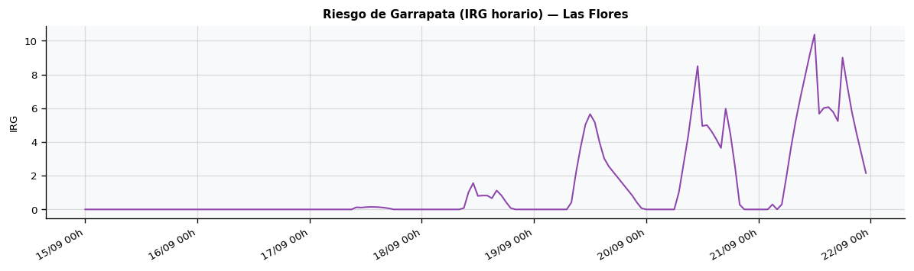
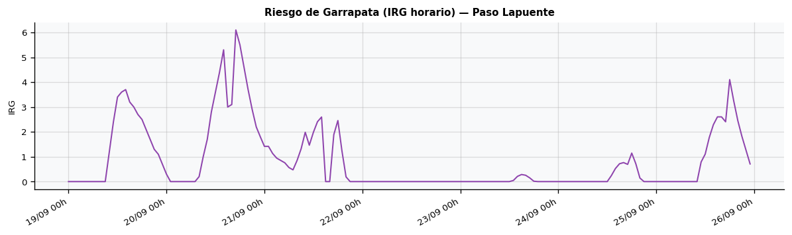
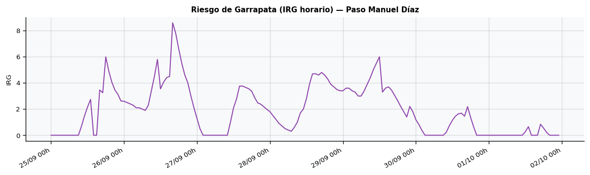
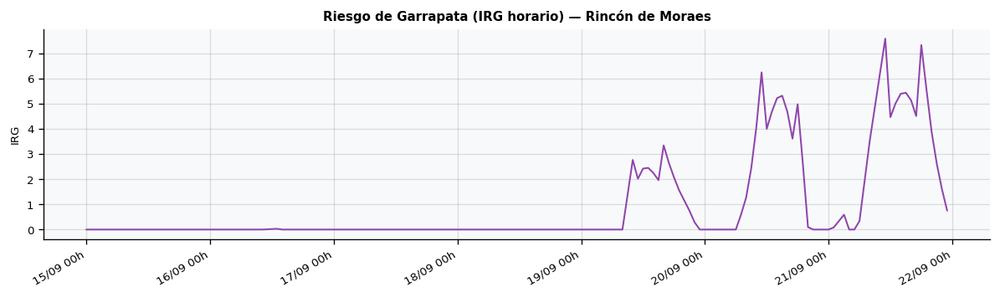

Condiciones para el Desarrollo de la Garrapata (Rhipicephalus microplus, 7 días)
Acumula la energía térmica disponible para el desarrollo de la fase libre de la garrapata bovina (huevo y larva sobre el pasto), la parte del ciclo que depende del clima. Temperatura umbral de desarrollo: 15,5 °C, medida sobre la temperatura del suelo a 0 cm, que es donde se incuba el huevo. La humedad actúa como condición limitante, porque la desecación es la principal causa de muerte de huevos y larvas. Se aplica además una penalización por frío nocturno: por debajo de 5 °C de mínima el aporte del día se anula y entre 5 y 14 °C se reduce, porque el enfriamiento mata los huevos. Referencia biológica: la incubación de una tanda de huevos requiere alrededor de 275 grados-día sobre 15,5 °C; una semana aporta una fracción de ese total.
El IRG sigue, semana a semana, en qué medida la temperatura del suelo y la humedad favorecen el desarrollo del huevo de la garrapata en el pasto, la etapa del ciclo que transcurre fuera del animal y depende del clima. Se calcula sobre la temperatura del suelo a 0 cm, que es donde se ponen y se incuban los huevos. Rivera se ubica sobre el borde sur del área en que la garrapata logra establecerse de forma permanente, y allí el frío del otoño y el invierno detiene el desarrollo de los huevos; por eso el índice funciona ante todo como una señal de estación, que indica cuándo se abre y cuándo se cierra el período en que puede haber eclosión. En ese marco resulta útil para anticipar la primera generación de fin de invierno y comienzos de primavera, de la que provienen las poblaciones abundantes del verano y el otoño y sobre la que se apoya el control estratégico.
Conviene leer la evolución del valor a lo largo de las semanas —su ascenso hacia la primavera y su descenso en invierno— antes que el registro de una semana aislada. Como el índice describe condiciones ambientales para el desarrollo del huevo y no la carga de garrapatas sobre los animales, la decisión de tratar continúa apoyándose en el recuento a campo, del orden de treinta hembras por animal, y en el estado de resistencia de la población, dentro del plan de control estratégico. Los límites entre niveles son provisionales y deberán ajustarse con registros locales de infestación.
Interpretación: < 17: Bajo | 17-34: Moderado | 34-60: Alto | > 60: Muy alto (grados-día por semana; umbrales provisionales, a ajustar con datos de infestación)
NOTA: agradecemos los valiosos aportes realizados por Claudio Soto del MGAP de Artigas.
📍 Estación Ataques

📍 Las Flores

📍 Minas de Corrales

📍 Moirones

📍 Paso Ataques

📍 Paso Lapuente

📍 Paso Manuel Díaz

📍 Rincón de Moraes

📍 Rivera Centro

📍 Tranqueras

📍 Villa Vichadero